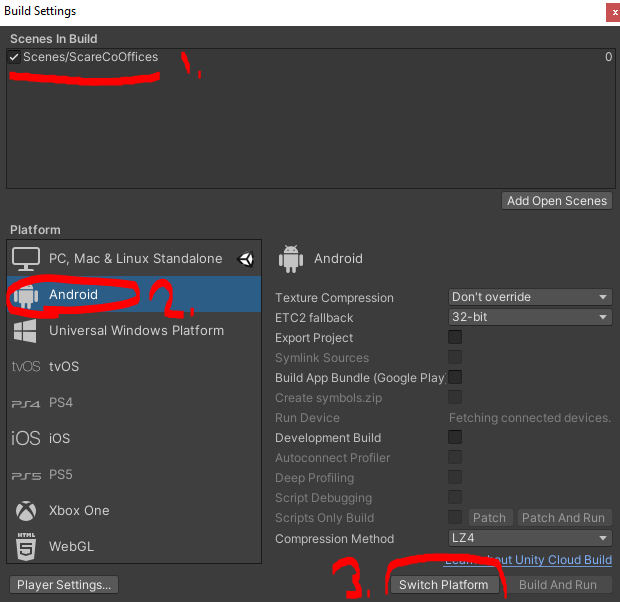
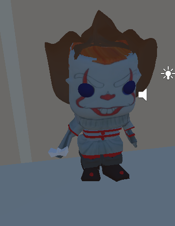

Introduction
With this project, we were tasked to create a Unity application that would place the player in a virtual reality office space designed to help them with a phobia. We were to augment the space with models, sounds, lights, and other interactive objects to help them deal with their specific phobia. The phobia that I ended up choosing to help take care of is clowns. Within my application, since I had a lot of trouble finding 3D models of clowns that were free and in a usable file format, I designed the office space to have items related to clowns sprawled around the space left by the office workers. Such items include balloons, juggling pins, clown shoes, etc. This allows the user that is walking throughout this space to face their fear of clowns by interacting with such items, letting them get a closer look and interact with them in order to realize that clowns aren't so bad at all. Seeing all of the items in the space, lets the user visualize a clown in their mind, and come face to face with their phobia.
How to build and run the app
In order to build the app and run it properly, you are going to need several tools installed prior to building it.
This app requires the following (For VRTK, you don't actually have to install anything from the site):
Once you have all of the apps listed above installed, you can now follow these build instructions in order to build this app on your own personal computer:
- Starting firstly, open up the GitHub repo link to the application, and either clone repo using git or download the zip file. If you are cloning the repository, utilize the command "git clone https://github.com/Stasioo/CS428Project2.git" in your command terminal in a folder that you would like to keep it. With the zip file, all you have to do is extract the contents to the desired folder.
- Once you have the project saved on your PC, the next step is to open up Unity Hub. If you do not have Unity V2019.4.28f1 installed, make sure you do that first by going to the Unity archive site and searching for that version, and installed it from there.
- Once you have that version installed, the next step is to add the project to Unity Hub, which you can do by clicking on the "ADD" button found on the top right under the "Projects" tab. Look for the folder that has the contents of the application. Make sure you are inside the folder containing folders such as Assets, Library, obj, packages, etc. Once you have added it, it will appear in the "Projects" tab of Unity Hub.
- The next step is to open the project, and once you have done that, under the Project Tab found on the bottom left, look under the Assets/Scenes folder, and find the "ScareCoOffices.unity" scene file if that scene isn't currently opened up by default.
- Now a couple of more checks are needed to make sure the build process will come cleanly. Firstly, we need to make sure Virtual Reality is supported by going under Edit -> Project Settings, it will bring up a new window, and under the Player tab, and under Deprecated Settings that Virtual Reality Supported is ticked off and the Oculus SDK is shown. If not, tick it and press the plus sign to add the Oculus SDK.
- Additionally, you need to make sure you have necessary VRTK packages installed if they weren't in the first place. You can do this by going to your application folder and under the Packages folder and look for the manifest.json file. Opening it in a text editor, double-check to see if you have these lines:
- Additionally, make sure within your Unity Hierarchy that CameraRigs.UnityXR is enabled whilst the CameraRigs.SpatialSimulator is disabled. 
- Once you have done that, now you can go under the File -> Build Settings to make it. Under the Build Settings window, make sure you have Scenes/ScareCoOffices selected as the scene for the build. Set the Build Platform to be Android so you can deploy it on the Oculus Headset. Once you have switched to that platform. You can either choose to build or Build And Run. If you have the Oculus Quest headset connected via USB cable, it will show up in the list, and you may click on Build and Run.
- Once you have done that, which may take a while if it's the first time building on the Oculus Quest headset, you may disconnect the USB cable, and use the headset. Whilst using it, go on the application menu, and in the upper right of the big menu, click on all Applications, and at the bottom of the list click on the application to start it.


"io.extendreality.tilia.mutators.collisionignorer.unity": "1.2.7",
"io.extendreality.tilia.camerarigs.spatialsimulator.unity": "1.4.12",
"io.extendreality.tilia.camerarigs.trackedalias.unity": "1.6.6",
"io.extendreality.tilia.camerarigs.unityxr": "1.5.5",
"io.extendreality.tilia.indicators.objectpointers.unity": "1.7.12",
"io.extendreality.tilia.input.unityinputmanager": "1.4.5",
"io.extendreality.tilia.interactions.controllables.unity": "1.13.0",
"io.extendreality.tilia.interactions.interactables.unity": "1.20.1",
"io.extendreality.tilia.interactions.spatialbuttons.unity": "1.3.11",
"io.extendreality.tilia.locomotors.climbing.unity": "1.7.26",
"io.extendreality.tilia.locomotors.teleporter.unity": "1.6.7",
"io.extendreality.tilia.locomotors.teleporttargets.unity": "1.1.11",
"io.extendreality.tilia.trackers.pseudobody.unity": "1.6.22"
If not, add whichever ones that you do not have.

Assets that I found
*Note: I did not list what assets fit the unique model requirement as there is more models that fit this requirement*
| Asset Name | Link | Requirement? | If so, which one? |
|---|---|---|---|
| AllSteel Scout Chair |
Link | No | --- |
| AllSteel Cabinets |
Link | No | --- |
| Potted Plant |
Link | No | --- |
CRT Monitor |
Link | No | --- |
Xerox Printer |
Link | No | --- |
| Coffee Table |
Link | No | --- |
| Modular Sofa Couch |
Link | No | --- |
| Fortnite Joker Model |
Link | Yes | 1. Animated/movable |
| Little PennyWise Toy  |
Link | Yes | 1.grabbable / droppable / tossable |
| Balloon Dog and Snake |
Link | Yes | 2. grabbable / droppable / tossable |
Koko The Clown |
Link | Yes | 3. grabbable / droppable / tossable |
| Jeck Terror (DuesselDorf Carnival 2016) |
Link | No | --- |
| Circus Tent |
Link | Yes | 4. grabbable / droppable / tossable |
| Joker Phoenix Bust |
Link | Yes | 5. grabbable / droppable / tossable |
| Clown Hat |
Link | Yes | 6. grabbable / droppable / tossable |
| Concrete Floor Texture |
Link | No | --- |
| Clown Horn by inplay | Link | Yes | 1. Sound |
| Bubble Pop by DuffyBro | Link | Yes | 2. Sound |
| Circus Music Sound by metrostock99 | Link | Yes | 3. Sound |
| Printer Noise bythe.bored.engineer69 | Link | Yes | 4. Sound |
| Office Noises Ambience by Chelly01 | Link | Yes | 1. Ambience sound |
| Joker Laugh by bulbastre | Link | Yes | 1. Ambience sound |
Assets that I made
| Asset Name | Requirement? | If so, which one? |
|---|---|---|
| Balloon |
Yes | 7. grabbable / droppable / tossable |
| Horn |
Yes | 8. grabbable / droppable / tossable |
| Candy |
Yes | 2. Produce new Objects |
| Clown Shoes |
Yes | 9. grabbable / droppable / tossable |
| Cardboard Clown |
No | --- |
| Water Gun |
Yes | 3. Produce new object |
| Microwave |
Yes | 2. Animated/movable part |
| Pie |
Yes | 3. Produce new Objects |
| Juggling Pin |
Yes | 10. grabbable / droppable / tossable |
| Unicycle |
Yes | 11. grabbable / droppable / tossable |
| Volkswagon Clown Car |
Yes | 3. Animated/movable part |
| Carpet Texture |
No | --- |
| Ceiling Texture |
No | --- |
Video Demonstration
Discussion on viewing in the VR world
When it comes to using a virtual reality headset versus using the spatial simulator for this project, I would have to say it makes a huge difference in the way we view and interact with things. Obviously, the first and main difference is the fact that one actually puts you in the actual virtual space while the other is just simply recreating it in a first-person shooter style where you have to view it through a monitor. That capability is what makes and breaks one's immersion within an app like this. When viewing through the spatial simulator, it doesn't really make you feel like you are within the virtual space rather it makes you feel like you are just playing a video game, making you not immersed in the real-like qualities that it can present. For example, interacting with items in the virtual reality headset allows you to lookup close to the details that 3D models might have, the physics can be tested to be as close to real-life as it can be. As well as the interactions that come with using a headset, where you can interact with an object like it would in real life, with an example like the water gun in my project, where one would simply press the trigger like a real water gun and it would start spouting bubbles. However with the spatial simulator, one really can't do that unless it's bound to a key on the keyboard. And when it is, it's doesn't feel like you are using it as you would in real life because the actuation is completely different in comparison. Another point to make about the differences between using a virtual reality headset over the spatial simulator is the way you maneuver around an environment. When using the spatial simulator, you are very much restricted in your movement and the types of movement you can do in the environment. For example, you can't duck, look over, or even look under things as your head is set to be stationary in one level of height. You can look down, up, side to side, but besides that, you can't do any of the things that I listed. With a virtual reality headset you can, and this adds further to the immersion and interaction that a user will have within virtual space. With the headset, one can spend minutes to hours trying to look/scavenge/or find any details within the environment, giving the environment more depth than it would ever with the spatial simulator. This comparison reminds me of a virtual reality game called VRChat, where users with headsets can interact and explore different worlds created by other users. The game allows users that don't have headsets to play the game in a similar fashion as the spatial simulator seen within our applications. That feature allows many to play the game but immersion and interaction is completely different for both types of user groups as one could gain more when wearing a headset.